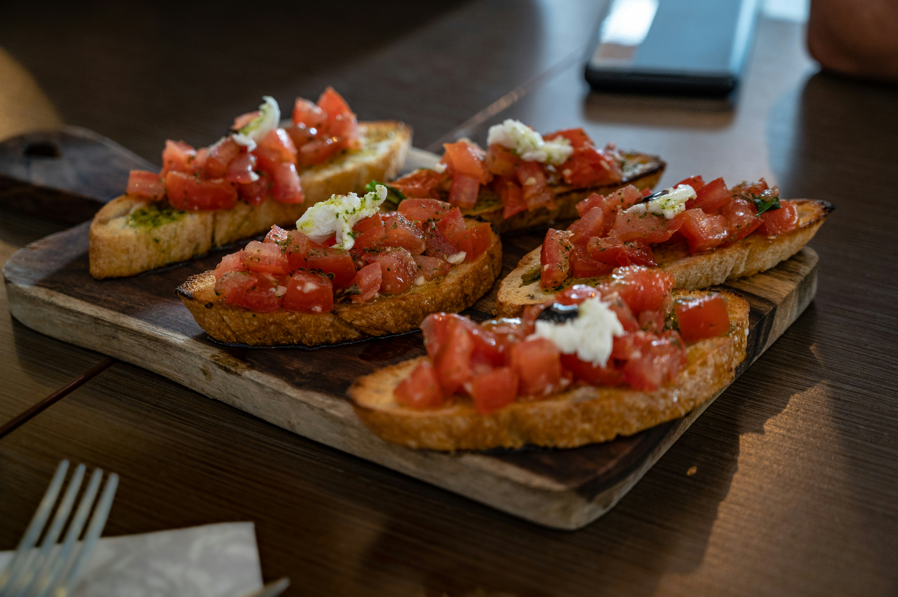

Bruschetta

The origin of this delicious appetizer was to make use of days old stale bread and dress it up with flavour to feed those doing long hours of manual labour usually toasted over open fires. The name coming from the word Bruscare, meaning to roast over coal. The modern take on this staple Italian starter uses fresh tomatoes and seasonings to create a flavourful start to any Italian meal.
- Prep time - 15 minutes
- Cook time - 5 minutes
Ingredients
- 3 to 4 ripe tomatoes, at room temperature, 1/2 pound
- Salt and fresh ground black pepper
- 2 tablespoons extra virgin olive oil
- 6 basil leaves, thinly sliced
- 6 slices Italian bread, 1/2-inch-thick
- 2 cloves garlic, peeled and left whole
Method
- Chop tomatoes into 1/4-inch chunks, then add to a medium bowl with agenerous pinch of salt, a small pinch of black pepper, one tablespoon of oliveoil, and the basil. Stir and let sit for 10 minutes.
- Meanwhile, heat a grill pan over medium heat.
- Drizzle bread slices with the remaining tablespoon of oil and grill for 2 to 3 minutes on each side until warmed through and grill marks appear.
- Rub one side of the warm grilled bread with garlic - two to three strokes per slice should do it.
- Stir and taste the tomatoes, then adjust with more salt or pepper as needed.
- Spoon a generous amount of tomatoes onto each bread slice. Drizzle a little of the juice remaining at the bottom of the bowl over the tomatoes and enjoy.
Tips
- Drizzling over some balsamic glaze will add a kick of authentic flavour.
- If you cant access fresh sweet tomatoes, any from your fridge will do thetrick!